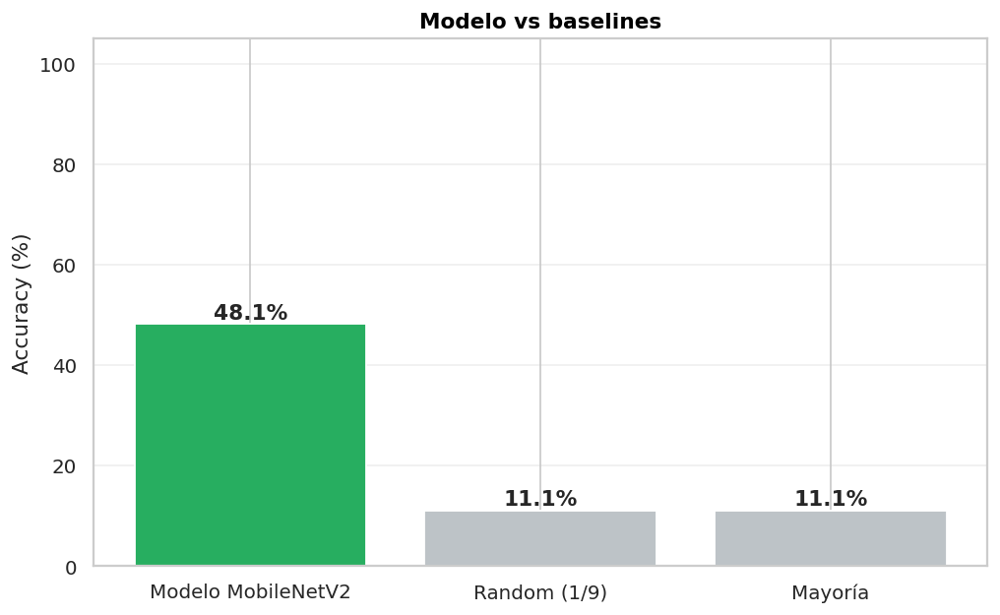
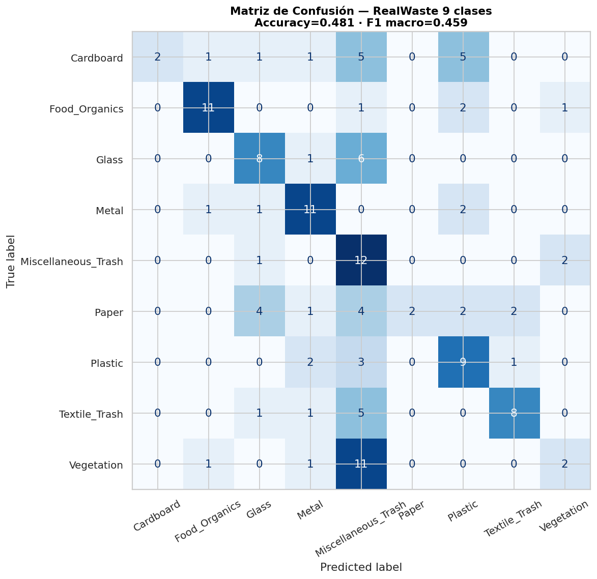
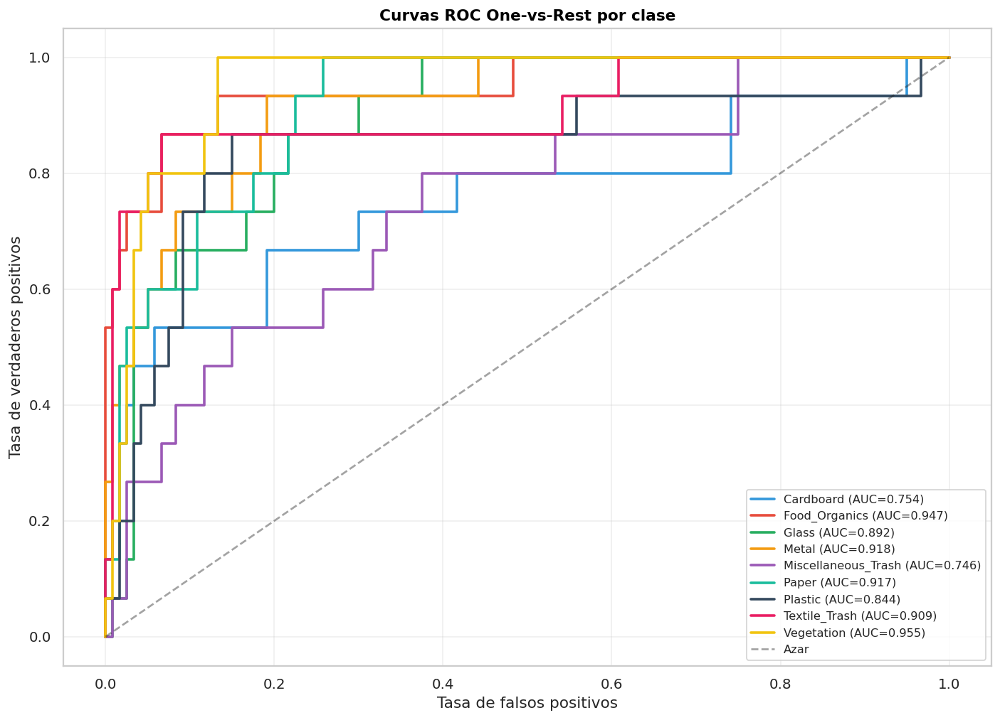
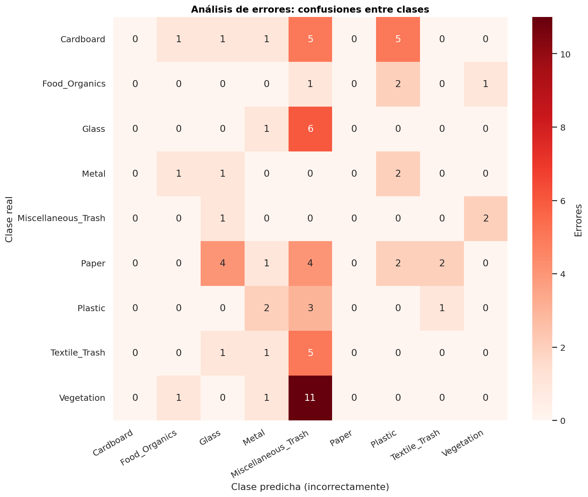

Métricas globales
0,481Accuracy
0,459F1 macro
× 4,3vs random
> 0,75AUC promedio

Matriz de confusión 9×9

Lecturas
- Food Organics, Metal, Textile Trash son las clases mejor identificadas.
- Cardboard y Paper se confunden entre sí (papel y cartón visualmente similares).
- Vegetation se confunde con Misc Trash.
Curvas ROC

AUC promedio > 0,75 — buena separabilidad pese al accuracy moderado.
Análisis de errores

Patrones principales
- Cardboard ↔ Paper: confusión esperable.
- Glass ↔ Misc Trash: vidrios pequeños ambiguos.
- Vegetation ↔ Misc Trash: restos vegetales que parecen basura.
Análisis de límites y riesgos
⚠️ Riesgo 1: Generalización a fotos de campo
Modelo entrenado con imágenes en fondo controlado → puede fallar con fotos en contenedores reales.
⚠️ Riesgo 2: Items raros
RAEE, residuos peligrosos no están en el dataset → no se clasifican.
Resumen para audiencia no técnica
Este sistema usa una red neuronal entrenada con miles de fotos de residuos para reconocer
9 categorías. Acierta en aproximadamente 5 de cada 10 casos
(vs 1 de cada 9 al azar). Es especialmente bueno con orgánicos, metal y textil.
Le cuesta más con vegetación y papel/cartón. No reemplaza el etiquetado correcto
ni una clasificación industrial certificada.